회로도를 실제의 제품으로 만들어 내기 위한 전자설계의 핵심단계
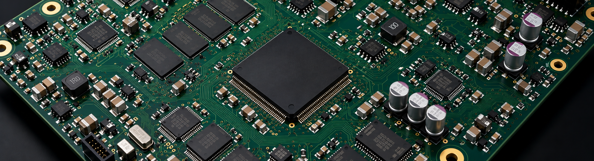
1. PCB Layout은 예술이 아닙니다, 공학입니다
앞서 우리는 회로도가 전자제품의 “설계 의도”를 표현한 것이라고 배웠습니다. 회로도에는 전자제품에 어떤 부품을 사용하고, 어떤 신호가 어디로 연결되는지가 표현되어 있습니다.
하지만 회로도만으로는 실제 PCB를 제작할 수 없습니다. 왜냐하면 회로도는 부품들의 연결 관계를 논리적으로 표현한 것이고, PCB는 그것을 물리적인 공간 안에 구현한 결과물이기 때문입니다.
예를 들어 회로도에서는 CPU 부품과 메모리 부품이 어떻게 연결된다고 간단히 표현할 수 있습니다. 하지만 실제 PCB에서는 다음과 같은 고민이 필요합니다.
- CPU와 메모리 부품을 얼마나 가까이 배치할 것인가?
- 신호선은 어떤 경로로 지나가야 하는가?
- CPU와 메모리에 전원을 어떤 경로를 통해 안정적으로 공급할 것인가?
- 고속 신호가 서로 간섭을 일으키지 않는가?
- 제품의 제조성, 조립성을 만족하는가?
위와 같은 작업을 하는 것이 바로 PCB Layout입니다.
PCB Layout은 PCB Artwork이라고도 합니다. 그래서 “선을 예쁘게 그리는 작업” 정도로 생각할 수도 있지만, 좋은 PCB Layout은 단순히 보기 좋은 그림을 만드는 작업이 아닙니다. PCB Layout은 전기적 특성, 열, 제조성, 신뢰성을 고려하는 공학 설계 과정입니다.
좋은 PCB는 마치 잘 설계된 도시와 같습니다.
도로가 무질서하게 연결되어 있으면 교통 체증이 발생하듯이, PCB에서도 신호가 지나가는 길이 잘못 설계되면 신호 품질 문제가 발생합니다.
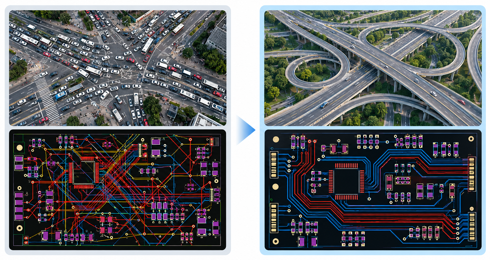
Placement – 부품 배치는 PCB 설계의 시작
PCB Layout에서 가장 먼저 하는 작업은 Placement(부품 배치)입니다. 각각의 부품을 PCB의 어느 위치에 놓을 것인지 결정하는 과정입니다.
Routing(배선)이 PCB Layout의 핵심이라고 얘기하는 사람도 있지만, 실제로는 Placement가 더 중요할 때가 많습니다.
부품의 배치가 잘못되어 있으면 아무리 배선을 잘 해도 좋은 PCB가 될 수 없고, 심지어 배선을 할 수 없기도 합니다.
도시를 설계할 때에 차량의 흐름을 생각하지 않고 주거지역, 상업지역, 산업단지, 복합구역, 공원, 쇼핑몰 등의 위치를 뒤죽박죽 섞어서 배치하면 도로를 아무리 잘 지어도 교통체증이 생길 수밖에 없는 것과 같습니다.
예를 들어 고속 메모리와 CPU가 사용된다고 가정한다면, 회로도에서는 두 부품이 연결되어 있다고 표현할 뿐이고 PCB에서는 두 부품 사이의 실제 거리가 직접적으로 표현됩니다.
거리가 멀어지면 신호선의 길이가 증가하고 노이즈의 영향을 많이 받아 고속 신호 품질이 떨어질 수 있습니다. 따라서 중요하거나 민감한 부품은 서로 가깝게 배치하고 신호의 흐름을 고려해야 합니다.
1) 기능별 그룹화
비슷한 기능을 하는 부품끼리 모읍니다. 예를 들어 CPU 주변에는 메모리, 클럭 관련 부품을 배치하고, 전원 IC 부근에는 전원안정을 위한 캐패시터와 필터 등을 배치합니다.
2) 신호의 흐름 고려
신호가 이동하는 방향을 고려합니다.
입력 → 처리 → 출력의 흐름이 자연스럽게 연결되도록 배치합니다.
3) 전원부와 신호부 분리
전원 회로는 큰 전류가 흐르기 때문에 주변 신호에 영향을 줄 수 있습니다.
따라서 민감한 신호 회로는 전원부에서 적절히 분리합니다.
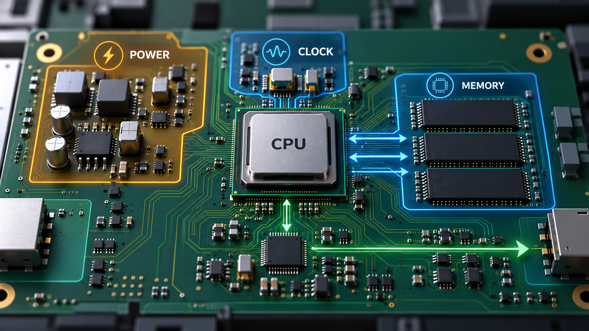
Routing – PCB 위에 신호가 흐르는 길 만들기
PCB에서 부품의 위치를 결정한 후에는 부품 사이를 전기적으로 연결해야 합니다. Routing은 PCB 위에서 전기가 이동하는 도로를 만드는 작업을 의미합니다. 보통 Trace(Pattern)를 그린다고 표현하기도 합니다.
도시에 비유하면 부품은 건물, PCB Pattern은 도로, 전기 신호는 자동차에 해당합니다.
하지만 PCB의 도로는 도로보다 까다로운 면이 있습니다. 자동차 도로는 조금 돌아서 가더라도 목적지에 도착하면 되지만,
전기신호는 지나가는 길 자체가 전기적 특성을 결정하므로 길이 잘못되면 제품이 작동하지 않을 수 있습니다.
마치 도로가 끊겨 있거나 장애물에 막힌 것과 같습니다.
특히 고속 신호에서는 패턴의 길이와 폭, 주변의 구조, 다른 신호와의 거리가 모두 중요합니다.
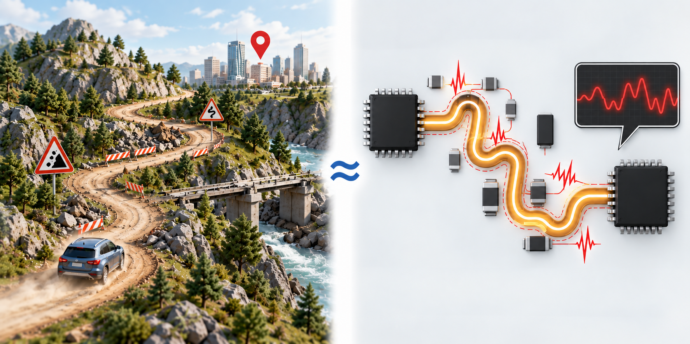
Layer – PCB는 여러 층으로 이루어진 건물
언뜻 보기에 PCB는 초록색 판 정도로 보일 수 있지만 사실 PCB 내부는 여러 개의 층으로 구성되어 있습니다. 이를 Layer 구조라고 합니다.
일반적인 4층짜리는 다음과 같은 층으로 구성됩니다.
- Top Layer : 부품 장착 및 신호 배선
- Inner Signal Layer(s) : 내부 신호층(들)
- Plane Layer(s) : 전원 및 Ground층(들)
- Bottom Layer : 반대쪽 부품 장착 및 배선층
(참고) Signal Layer와 Plane Layer
Signal Layer는 신호 패턴으로만 이루어진 층입니다. 이 Layer에서는 클럭과 데이터 신호, 제어용 신호등이 지나갑니다.
Plane Layer는 넓은 전원과 접지를 넓게 공급하는 층입니다. 즉 Ground Plane, Power Plane을 표현합니다. Plane은 단순한 전원 연결 이상의 역할을 합니다. 특히 Ground Plane은 Return Path 제공, Noise 감소, EMI 감소 등 매우 중요한 역할을 합니다.
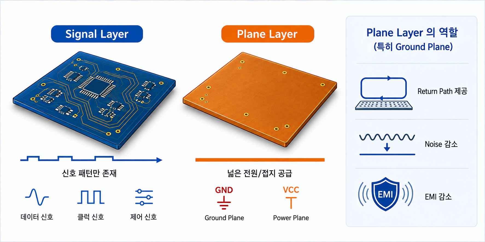
PCB의 내부 구조는 아파트에 비유할 수 있습니다. 단층 집에서는 공간이 부족하지만, 여러 층을 사용하면 더 많은 공간을 활용할 수 있습니다.
마찬가지로 PCB도 Layer를 늘리면 더 많은 신호를 연결할 수 있고, 전원 품질을 개선할 수 있으며, 고속 신호가 간섭 없이 흐를 수 있도록 합니다.
Return Path – 신호는 반드시 돌아옵니다
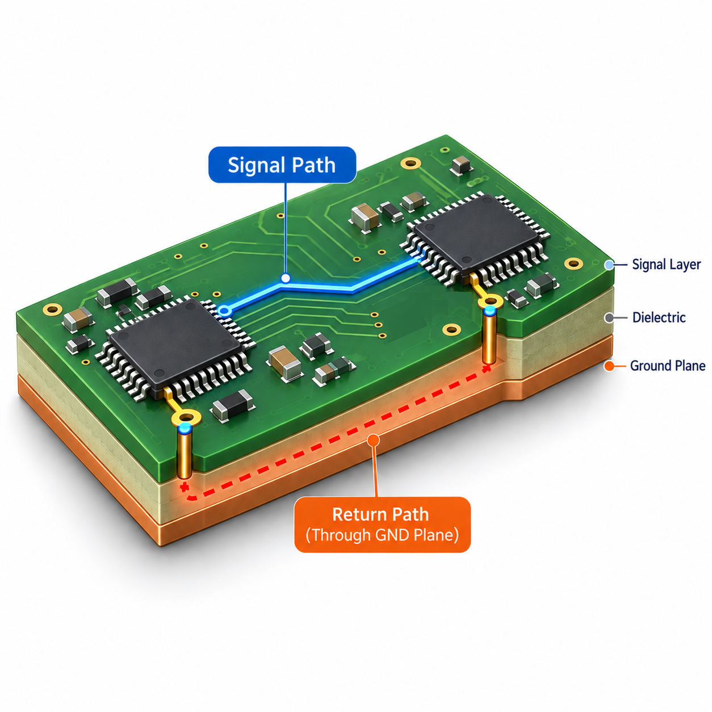
PCB Layout에서 놓치기 쉬운 개념 중 하나는 Return Path(복귀 경로)입니다. 전류는 단순히 출발점에서 목적지로 이동하는 것이 아닙니다. 반드시 돌아오는 길이 필요합니다.
전기 신호는 출발→전달→복귀라는 순환 구조를 가지고 있습니다.
예를 들어 메모리 IC가 3.3V의 전원을 공급받아 신호를 처리한다면, “3.3V 전원과 신호가 메모리 IC로 흘러가는 신호선”만 생각해서는 안 됩니다. 공급받은 전원과 신호에 대한 전류들이 되돌아가는 경로도 함께 고려해야 합니다.
좋은 PCB에서는 신호선 아래의 Layer에 안정적인 Ground Plane을 배치하여 짧고 안정적인 Return Path를 제공합니다.
2. PCB Layer Stackup
PCB Layer Stackup은 PCB 내부의 Layer를 어떻게 구성할 것인지 결정하는 것을 의미합니다.
같은 부품과 같은 회로도를 사용하더라도 Stackup 정의가 다르면 PCB 성능은 크게 달라질 수 있습니다. 특히 최근 전자제품은 고속 프로세서, DDR 메모리, USB, Ethernet 등 고속 신호를 많이 사용하기 때문에 Layer Stackup 정의가 매우 중요합니다.
Layer의 구조
대표적인 4 Layer PCB 구조는 다음과 같습니다.
- Top Layer
- Ground Plane
- Power Plane
- Bottom Layer
이 구조는 신호층과 전원층을 적절히 분리하여 회로가 안정적으로 동작할 수 있도록 합니다.
Layer가 한두 개인 PCB에서는 모든 신호와 전원이 같은 공간에서 혼재해야 하지만, 4 Layer 이상에서는 역할을 나눌 수 있습니다.
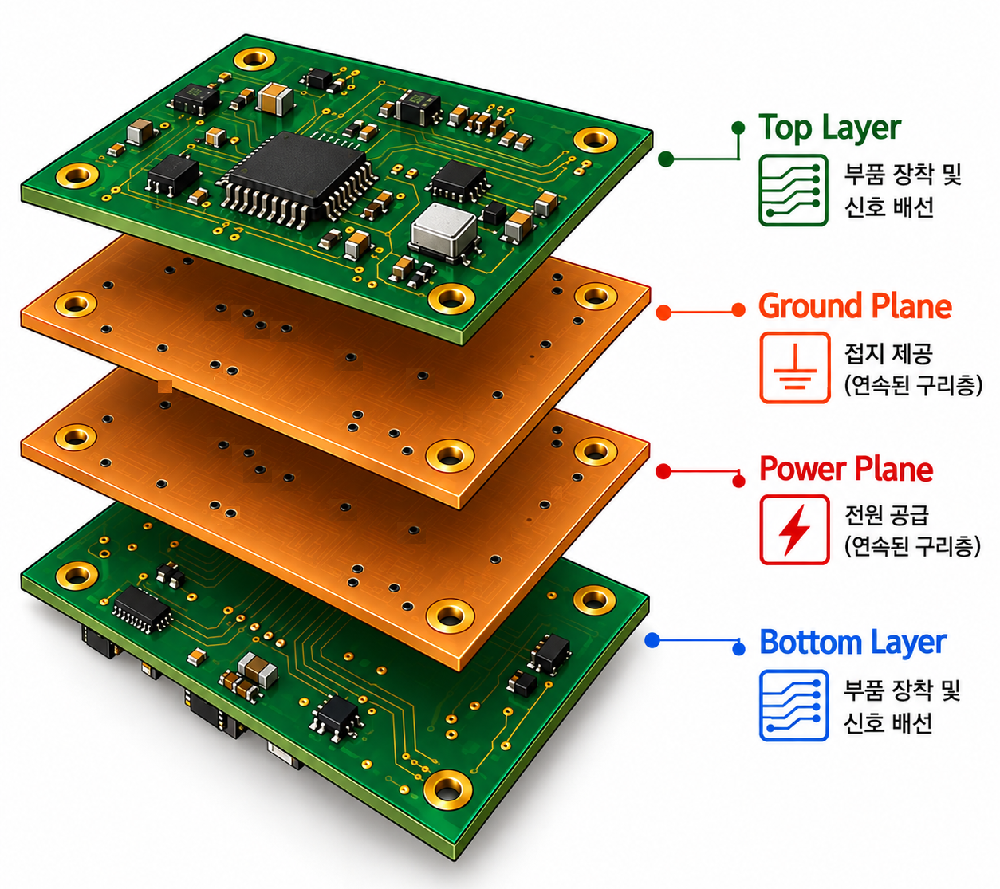
3. 고속신호 PCB에서 반드시 알아야 할 것
전자제품의 속도가 빨라질수록 PCB는 단순히 부품을 연결하는 판이 아니라 하나의 고주파 회로가 됩니다. 예전에는 “연결만 되면 된다”라고 생각했지만, 요즘 제품에서는 “어떻게 연결하느냐”가 매우 중요합니다.
Differential Pair
Differential Pair(차동 신호)는 두 개의 신호선을 한 쌍으로 사용하는 방식입니다. 대표적인 예로 USB, HDMI, Ethernet, PCI Express, SATA 등이 있습니다.
일반적인 신호는 Signal + Ground 구조를 사용하지만, Differential Pair는 Positive Signal, Negative Signal 두 신호의 전압 차이를 이용합니다.
외부 노이즈가 두 신호에 비슷하게 영향을 주기 때문에 두 신호의 전압을 차감하면 노이즈를 상쇄하게 됩니다.
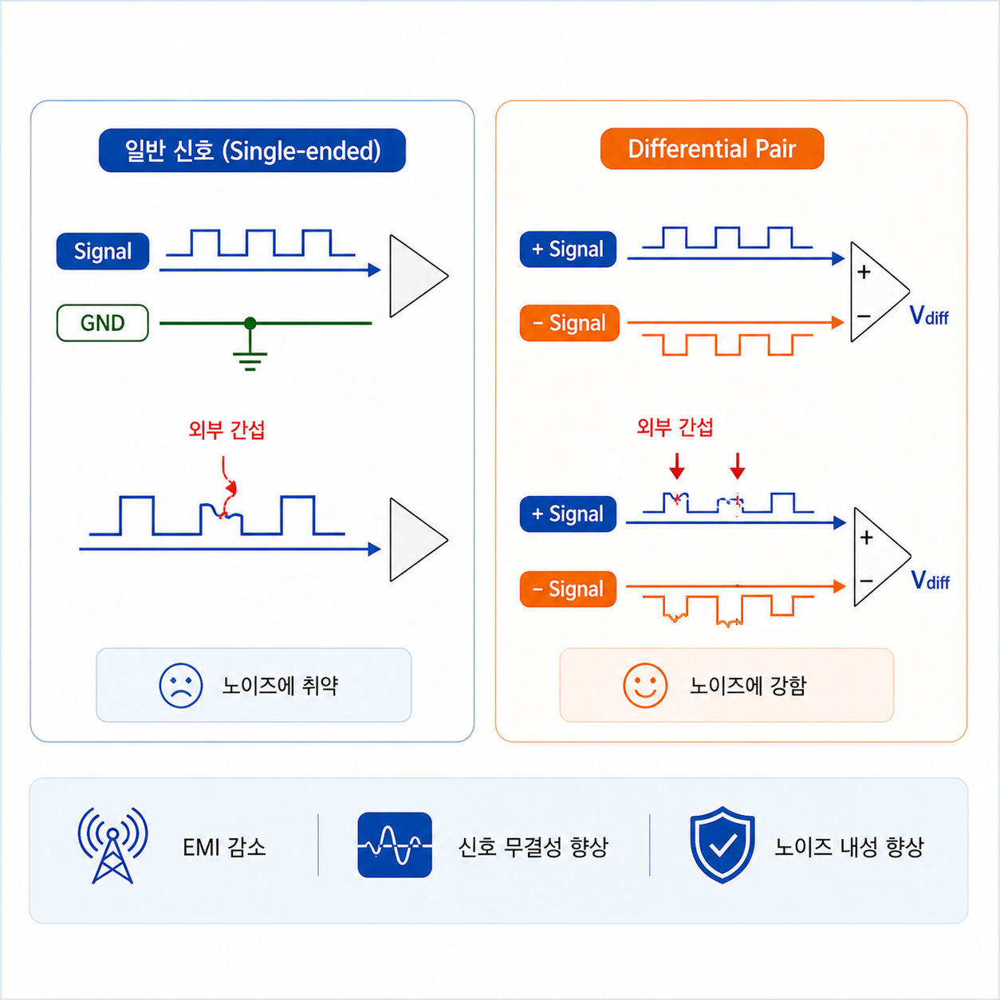
Length Matching
고속 신호에서는 Trace(Pattern)의 길이도 중요합니다. 특히 여러 신호가 동시에 처리되어야 하는 경우 신호의 도착 시간이 달라지면 문제가 발생할 수 있습니다.
즉, 이런 신호들이 연결되는 Trace의 길이가 다르다면 도착하는 시간이 달라져 데이터가 잘못 처리될 수 있습니다. 이 문제를 줄이기 위해 일부러 배선을 구불구불하게 만들어 Length Matching, 즉 길이를 맞춥니다.
괜히 복잡하게 처리한 것이 아니라 신호의 도착 시간을 맞추기 위한 정밀 설계입니다.
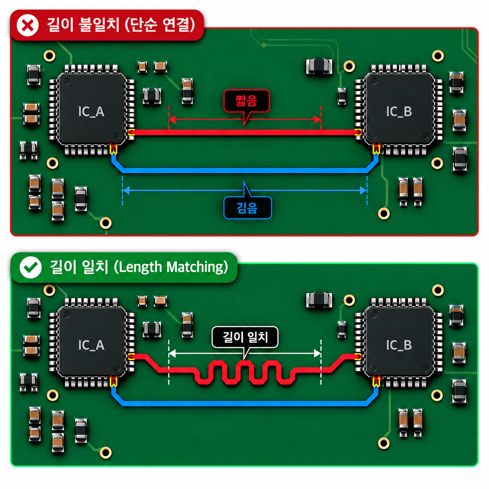
Crosstalk
Crosstalk는 인접한 신호끼리 서로 영향을 주는 현상입니다.
PCB에 그려진 개별 신호의 Trace(Pattern)은 완전히 독립적으로 보호되지 않고, 서로 가까운 신호선끼리 전기적으로 영향을 주고받습니다.
마치 옆에 있는 사람이 큰 소리로 이야기하면 내 대화가 잘 안 들리는 것과 비슷합니다.
Crosstalk을 줄이는 방법으로는 Pattern간 거리 확보, Ground Plane 활용, Layer 변경, Routing 방향 조절 등이 있습니다.
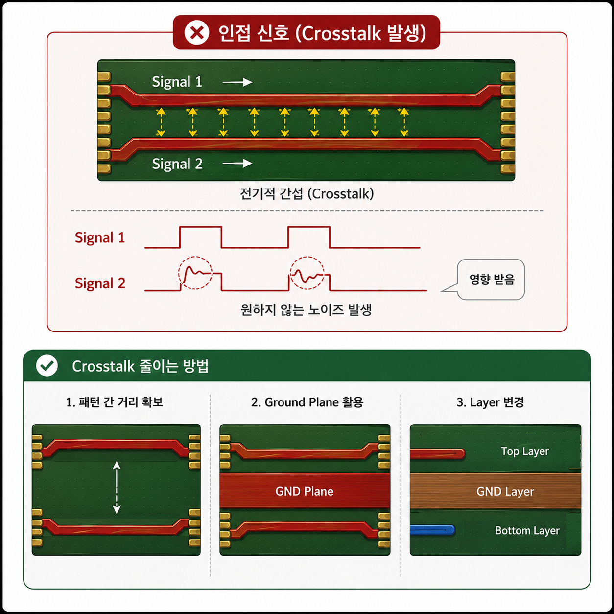
4. 고속 디지털 PCB 설계의 필수 요소
고속 디지털 PCB 설계에서 중요한 개념으로 Signal Integrity(SI)와 Power Integrity(PI), 그리고 Electromagnetic Interference(EMI)가 있습니다.
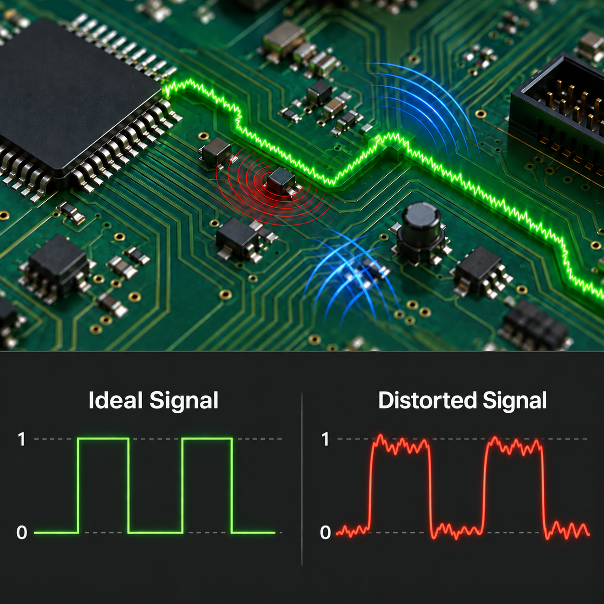
Signal Integrity (SI)
Signal Integrity란 신호가 원하는 형태로 정확하게 전달되는지를 의미합니다.
이상적인 디지털 신호는 수직으로 꺾이는 톱니모양 형태입니다. 하지만 실제 PCB에서는 신호반사, 노이즈, Crosstalk, 손실등으로 인해 신호가 변형됩니다.
신호가 너무 많이 왜곡되면 데이터 오류, 통신 실패 등으로 시스템이 작동하지 않게 됩니다.
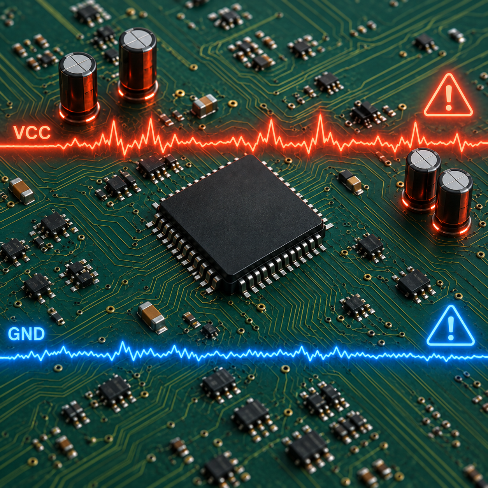
Power Integrity (PI)
Power Integrity는 전원이 안정적으로 공급되는지를 의미합니다.
전자부품이 작동하려면 안정적인 전원 공급이 필요합니다. 하지만 CPU처럼 많은 전류를 요구하는 부품은 작동할 때에 전압이 흔들릴 수 있습니다.
이를 해결하기 위해 Power Plane 설계, Decoupling Capacitor 배치, 전원 경로 최적화 등이 필요합니다.
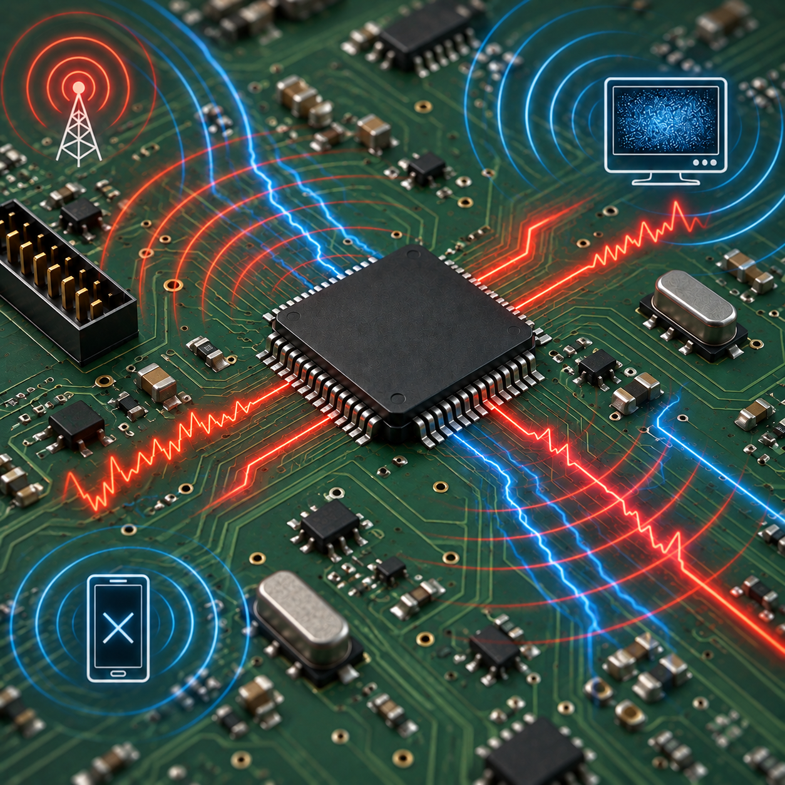
EMI (Electromagnetic Interference)
PCB에서 고속 신호가 패턴 위를 지나가면 패턴이 작은 안테나처럼 동작하여 전자파를 방출할 수 있습니다. 이것을 고려하지 않으면 PCB가 동작할 때에 주변의 다른 제품에 영향을 주어 통신 오류를 발생시킬 수 있고, 인증을 통과하지 못할 수 있습니다.
따라서 이러한 전자파 간섭을 억제하고 외부 방해로부터 제품의 정상 작동을 보장하는 EMC(전자파 적합성) 설계가 필수적입니다.
PCB Layout은 단순히 부품을 배치하고 신호를 연결하는 작업이 아니라, 제품간 간섭이나 인증까지 영향을 미치는 중요한 과정입니다.
마무리
PCB Layout은 마치 어떤 도시를 설계하는 것처럼 전자부품을 배치하고 서로 신호를 주고 받을 수 있도록 설계하는 작업으로, 회로도를 실제의 모습으로 바꾸어 만드는 단계입니다.
좋은 PCB Layout은 단순히 부품을 예쁘게 배치하고 신호를 연결하는 것이 다가 아닙니다. 신호가 깨끗하게 이동하고, 전원이 안정적으로 공급되며, 노이즈가 적고, 제조가 용이하며, 오랫동안 안정적으로 동작하는 PCB를 만드는 것입니다.
결국, PCB Layout은 전기, 물리, 제조 기술이 모두 결합된 종합 공학 분야입니다.
다음 편에서는 PCB Layout의 기반이 되는 PCB Library(회로도 Symbol과 Footprint)에 대해 알아보겠습니다.
PCB는 결국 부품의 집합으로 만들어지며, 그 부품을 정확하게 표현하는 Library가 없으면 좋은 Layout을 설계할 수 없습니다.